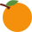

التمييز الملفوظ والملحوظ
الدرس 2 من 4 — التراكيب
أُلاحظ
أقرأ الأمثلة وأستمع إليها، وألاحظ الكلمات الملوّنة.
- اِشْتَرَيْتُ لِتْرًا زَيْتًا.
- اِشْتَرَيْتُ كِيلُوغْرَامًا بُرْتُقَالًا.
- طَابَ الْوَلَدُ نَفْسًا.
أستنتج
التمييز الملفوظ (تمييز الذات)يأتي بعد ما يدلّ على: وزن (اشْتَرَيْتُ كِيلُوغْرَامًا تُفَّاحًا)، أو كيل (لِتْرًا حَلِيبًا)، أو مساحة (هِكْتَارًا أَرْضًا)، أو عدد (عِشْرِينَ كِتَابًا).
التمييز الملحوظ (تمييز النسبة)يزيل الغموض عن الجملة كلّها: اِمْتَلَأَ الْكُوبُ مَاءً، زَادَ الطِّفْلُ طُولًا.

كيل
اِشْتَرَيْتُ لِتْرًا زَيْتًا.

وزن
اِشْتَرَيْتُ كِيلُوغْرَامًا بُرْتُقَالًا.
ملحوظ
طَابَ الْوَلَدُ نَفْسًا.
أُطبّق
1في «اشْتَرَيْتُ لِتْرًا حَلِيبًا» التمييز:
2«زَادَ الطِّفْلُ طُولًا» تمييز:
3«لِتْرًا زَيْتًا» يدلّ على:
4اضغط 🔊 واسمع، ثمّ أجب: ما التمييز؟
إجابات صحيحة من أول محاولة:
أتمرّن أكثر
أستمع، ثمّ أرتّب الكلمات لأكوّن الجملة:
أستمع، ثمّ أكتب ما أسمع:
أستمع، ثمّ أكتب ما أسمع:
✓ أنهيتَ هذا الدرس
الرسوم: Twemoji (CC-BY 4.0) وFluent Emoji من Microsoft (MIT). الأصوات: صوت عربي اصطناعي.